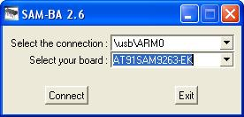

OpenEmbedded / Angstrom : get demo binaries
Root file system pre-built images
The Root file system images are images ofjffs2 filesystems containing a entire embedded Linux system. This fielsystem is read/write capable and is designed to be stored in NAND FLASH memory available on AT91sam EK boards (256 MBytes, large pages : 2KBytes).
Included applications
List of included applications : overview and detailed package list.| console image | x11 image | x11 AT91SAM9M10 image | |
|---|---|---|---|
| Description | Non graphical Linux Root filesystem for AT91SAM9260EK board for example |
Graphical Linux Root filesystem for board having a screen attached |
Graphical Linux Root filesystem with video packages for AT91SAM9M10 based boards |
| Common base packages | alsa & alsa-utils avahi busybox dosfstools & e2fsprogs dropbear (ssh server) glibc iptables opkg portmap strace thttpd (web server) tinylogin mtd utils iperf (network testing tool) wireless tools & wpa-supplicant |
||
| Graphical packages | None | glib & GTK+ GPE matchbox tslib X11 (xserver-kdrive-fbdev) + fonts |
|
| Multimedia packages | madplay mplayer |
madplay mplayer Gstreamer framework Gstreamer plugins and audio/video libraries on2-8170-libs Hardware video decoder Gstreamer plugin |
|
| Complete package list | console-at91sam9-image | x11-at91sam9-image | x11-at91sam9m10-image |
Angstom 2008.1 binaries
| Board | Description | Binary |
|---|---|---|
| at91sam9260ek | Angstrom console image tailored for AT91 JFFS2 root filesystem |
Angstrom-console-at91sam9-image-glibc-ipk-2009.X-stable-at91sam9260ek.rootfs.jffs2 |
| at91sam9xeek | Angstrom console image tailored for AT91 JFFS2 root filesystem |
Angstrom-console-at91sam9-image-glibc-ipk-2009.X-stable-at91sam9xeek.rootfs.jffs2 |
| at91sam9261ek | Angstrom x11 (graphical) image tailored for AT91 JFFS2 root filesystem |
Angstrom-x11-at91sam9-image-glibc-ipk-2009.X-stable-at91sam9261ek.rootfs.jffs2 |
| at91sam9263ek | Angstrom x11 (graphical) image tailored for AT91 JFFS2 root filesystem |
Angstrom-x11-at91sam9-image-glibc-ipk-2009.X-stable-at91sam9263ek.rootfs.jffs2 |
| at91sam9rlek | Angstrom x11 (graphical) image tailored for AT91 JFFS2 root filesystem |
Angstrom-x11-at91sam9-image-glibc-ipk-2009.X-stable-at91sam9rlek.rootfs.jffs2 |
| at91sam9g20ek | Angstrom console image tailored for AT91 JFFS2 root filesystem |
Angstrom-console-at91sam9-image-glibc-ipk-2009.X-stable-at91sam9g20ek.rootfs.jffs2 |
| at91sam9g10ek | Angstrom x11 (graphical) image tailored for AT91 JFFS2 root filesystem |
Angstrom-x11-at91sam9-image-glibc-ipk-2009.X-stable-at91sam9g10ek.rootfs.jffs2 |
| at91sam9g45ekes | Angstrom x11 (graphical) image tailored for AT91 JFFS2 root filesystem |
Angstrom-x11-at91sam9-image-glibc-ipk-2009.X-stable-at91sam9g45ekes.rootfs.jffs2 |
| at91sam9m10ekes | Angstrom x11 (graphical) image tailored for AT91 JFFS2 root filesystem |
Angstrom-x11-at91sam9m10-image-glibc-ipk-2009.X-stable-at91sam9m10ekes.rootfs.jffs2 |
| at91sam9m10g45ek | Angstrom x11 (graphical) image tailored for AT91 JFFS2 root filesystem |
Angstrom-x11-at91sam9m10-image-glibc-ipk-2009.X-stable-at91sam9m10g45ek.rootfs.jffs2 |
Install a rootfs on an AT91 board
This section describes How to load a jffs2 root filesystem into the NAND FLASH of the board with SAM-BA and right through the u-boot command line. SAM-BA is the simplest way.0x400000 in the NAND FLASH. From a Linux kernel point of view, this corresponds to the index 1 of the MTD subsystem device (/dev/mtd1 and /dev/mtdblock1).
Using SAM-BA
- Connect the USB Device Interface to your host machine using the USB Device Cable
- Make sure that the chip can execute the bootROM monitor SAM-BA-boot :
- Start SAM-BA GUI Application
- Select the the board in the drop-down menu and choose the USB Connection

- Eventually plug back a jumper to access the media on which u-boot must be loaded to
- In the main SAM-BA window :
- Choose the NandFlash media tab in the SAM-BA GUI interface
- Initialize the media choosing the NandFlash Init action in the Scripts rolling menu and press Execute
- In the same Scripts menu choose the NandFlash Erase All action and press Execute . A Please Wait... dialog window is appearing: wait for the end of the erase process
- Press on Send File Name Browse button
- Choose the filesystem image file ( x11-image-demo-at91sam9263ek.jffs2 for example) and press Open
- Enter the proper address on media in the Address text field. You can find a media map for each product in GettingStarted#Linux4SAM_DataFlash_demo_Memory and GettingStarted#Linux4SAM_NandFlash_demo_Memory
- Press Send File button. A Please Wait... dialog window is appearing: wait for the end of the flashing process
- On AT91SAM9260-EK or AT91SAM9XE-EK, If you have erased the booting media, do not forget to replace AT91Bootstrap in it
- Close SAM-BA, remove the USB cable
Using u-boot commands
Here is a reference documentation about JFFS2 as root filesystemU-Boot> nand erase NAND erase: device 0 whole chip Skipping bad block at 0x000c0000 Skipping bad block at 0x009c0000 Erasing at 0xffe0000 -- 100% complete. OK2. download the JFFS2 filesystem from TFTP to the board RAM (address 0x21400000{{
U-Boot> tftp 0x21400000 x11-image-demo-at91sam9263ek.jffs2
TFTP from server 10.159.240.137; our IP address is 10.159.245.170
Filename 'nferre/x11-image-demo-at91sam9263ek.jffs2'.
Load address: 0x21400000
Loading: T #################################################################
#######################################################T ##########
#################################################################
[..]
#########################
done
Bytes transferred = 26083328 (18e0000 hex)
nand write.jffs2 command.
3. write the filesystem from RAM@0x21400000{{0x400000 (Linux /dev/mtdblock1). Note the last parameter : it is the number of Bytes transferred indicated in the previous command.
U-Boot> nand write.jffs2 0x21400000 0x400000 0x18e0000 NAND write: device 0 offset 0, size 26083328 ... Bad block at 0xc0000 in erase block from 0xc0000 will be skipped Bad block at 0x9c0000 in erase block from 0x9c0000 will be skipped Writing data at 0x195f800 -- 100% complete. OK


| I | Attachment | Action | Size | Date | Who | Comment |
|---|---|---|---|---|---|---|
| |
SAM-BA_mainwin-rootfs.png | manage | 30.6 K | 2007-09-11 - 11:37 | NicolasFerre | SAM-BA main window flashing rootfs |
| |
console-at91sam9-image_installed-packages.txt | manage | 5.8 K | 2010-03-17 - 15:07 | NicolasFerre | |
| |
x11-at91sam9-image_installed-packages.txt | manage | 11.9 K | 2010-03-17 - 15:07 | NicolasFerre | |
| |
x11-at91sam9m10-image_installed-packages.txt | manage | 13.8 K | 2010-03-17 - 15:08 | NicolasFerre |
r22 - 07 Jun 2010 - 14:16:24 - NicolasFerre

{kind=link}
{kind=link}
Copyright © by the contributing authors. All material on this collaboration platform is the property of the contributing authors.
Linux® is the registered trademark of Linus Torvalds in the U.S. and other countries.
Microchip® and others, are registered trademarks or trademarks of Microchip Technology Inc. and its subsidiaries. 
Arm® and others are registered trademarks or trademarks of Arm Limited (or its affiliates). Other terms and product names may be trademarks of others.
Ideas, requests, contributions ? Connect to LinksToCommunities page.